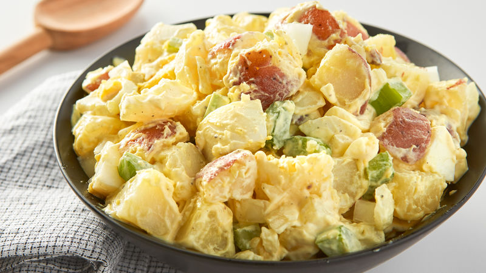

Potato Salad

Description
This is potato salad the old-fashioned way, with eggs, celery and relish. It's really good to serve with chili.
Ingredients
-
Potatoes
-
Eggs
-
Celery
-
Onion
-
Relish
-
Mayonnaise
Steps
-
Bring a large pot of salted water to a boil. Add potatoes and cook until tender but still firm, about 15 minutes. Drain, cool, peel and chop.
-
While potatoes cook, place eggs in a saucepan and cover with cold water. Bring water to a boil; cover, remove from heat, and let eggs stand in hot water for 10 to 12 minutes. Remove from hot water, cool, peel and chop.
-
Combine the potatoes, eggs, celery, onion, relish, mayonnaise, mustard, garlic salt, celery salt, and pepper in a large bowl. Mix together well and refrigerate until chilled.